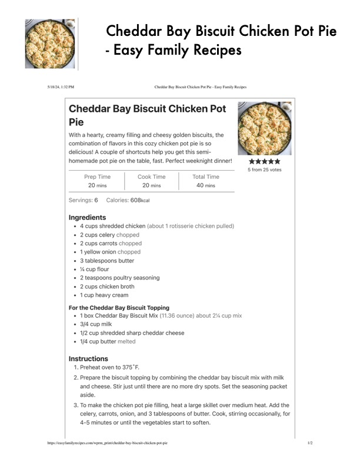

Cheddar Bay Biscuit Chicken Pot Pie

Original cookbook page 595
Ingredients
- Acups shredded chicken (about 1 rotisserie chicken pulled)
- 2cups celery chopped
- * 2cups carrots chopped
- * 1yellow onion chopped
- 3 tablespoons butter
- Y% cup flour
- * 2 teaspoons poultry seasoning
- 2cups chicken broth
- * 1cup heavy cream
- For the Cheddar Bay Biscuit Topping
- * 1box Cheddar Bay Biscuit Mix (11.36 ounce) about 2% cup mix
- 3/4 cup milk
- * 1/2 cup shredded sharp cheddar cheese
- 1/4 cup butter melted
Instructions
- Preheat oven to 375°F.
- Prepare the biscuit topping by combining the cheddar bay biscuit mix \ and cheese. Stir just until there are no more dry spots. Set the seasonii aside.
Recipe #595 from collection